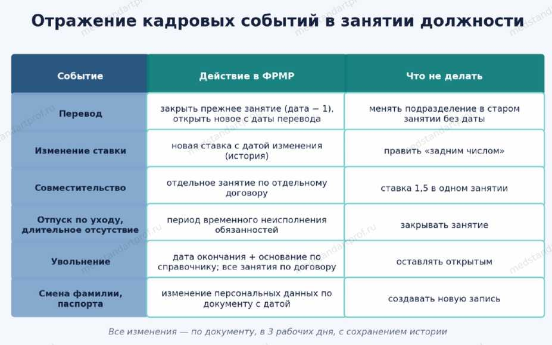
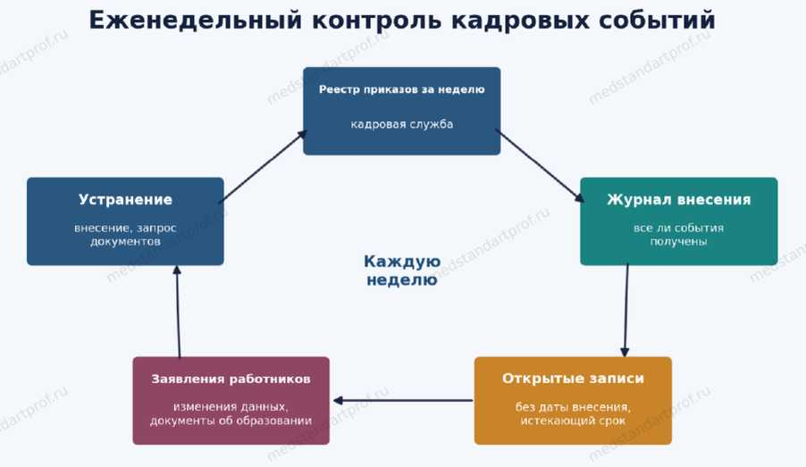
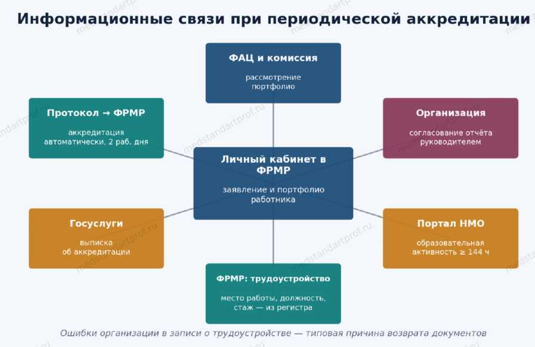
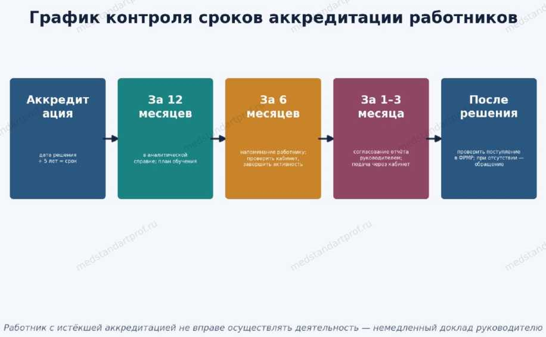
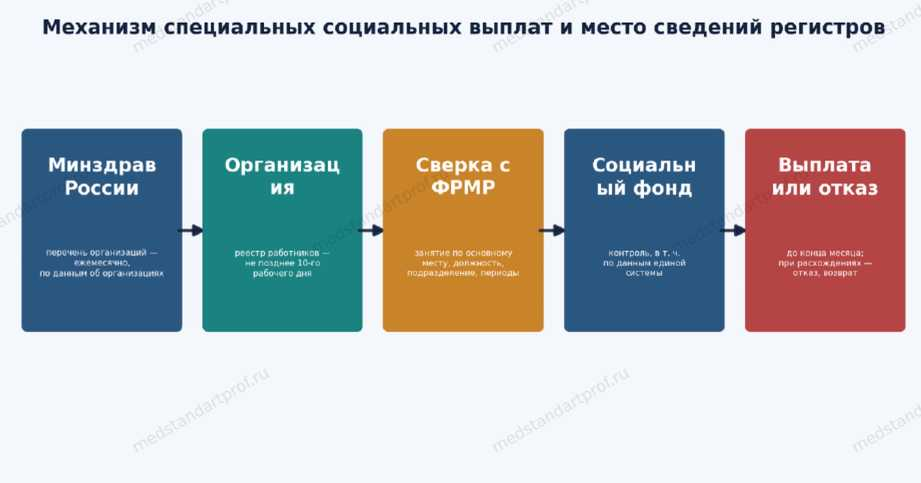
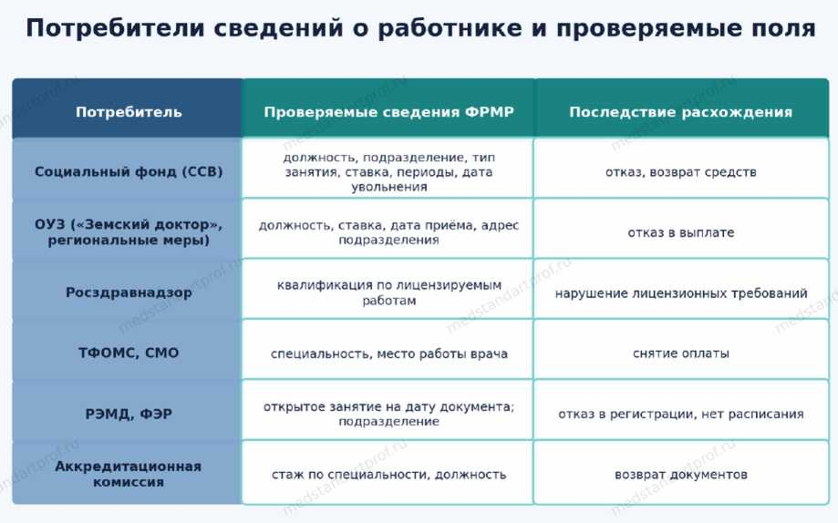

Приём работника — начало, а не конец работы с его записью. За время работы в организации у работника происходят десятки событий, каждое из которых должно быть отражено в ФРМР в трёхдневный срок: переводы, изменения ставки, новые совместительства, отпуска по уходу за ребёнком, увольнение, смена фамилии и паспорта. Именно на этапе сопровождения накапливаются расхождения, которые затем выявляют проверки и сверки.
Цель лекции — освоить порядок отражения в ФРМР кадровых событий в течение трудовых отношений и при их прекращении, включая правила ведения истории занятий и актуализации персональных данных.
1. Событие — документ — запись. Каждое изменение вносится на основании приказа (дополнительного соглашения, заявления с документом) в течение трёх рабочих дней со дня получения новых сведений (пункты 17, 21, 23 Порядка № 708н).
2. История сохраняется. Занятия должностей не удаляются и не «переписываются»: изменение отражается закрытием прежнего состояния с датой и открытием нового либо внесением изменения с датой в истории записи — в зависимости от типа события и правил интерфейса.
3. Согласованность с ФРМО. Любое изменение подразделения или должности требует наличия соответствующей штатной должности со свободными ставками в ФРМО.
4. Контроль сумм. После изменения ставок сумма занятых ставок по должности не должна превышать штатные.
Оформляется дополнительным соглашением и приказом о переводе (статья 72.1 Трудового кодекса). В ФРМР:
1. Убедиться в наличии штатной должности в подразделении-приёмнике со свободными ставками.
2. Закрыть текущее занятие должности датой, предшествующей дате перевода (последний день работы на прежней должности), с основанием «перевод».
3. Создать новое занятие: подразделение, должность, тип, ставка, дата начала — дата перевода по приказу, реквизиты дополнительного соглашения (номер договора — прежний, если договор тот же).
4. Проверить в ФРМО изменение занятых ставок в обоих подразделениях.
Если интерфейс предусматривает операцию «перевод» единым действием — использовать её; результат тот же: закрытое прежнее занятие и открытое новое.
Временный перевод на срок до одного года или на период отсутствия основного работника (статья 72.2 Трудового кодекса) отражается аналогично постоянному, с указанием срока (при наличии поля) и последующим обратным переводом по окончании срока. Регламент предусматривает контроль сроков временных переводов по журналу.
Изменение кабинета или участка вносится в существующее занятие с датой; закрытие занятия не требуется.
Изменение доли ставки по соглашению сторон (например, с 1,0 на 0,5) вносится в текущее занятие с указанием даты изменения; система сохраняет историю значений. Если интерфейс не поддерживает историю ставки в одном занятии — прежнее занятие закрывается, новое открывается с новой ставкой. Основание — дополнительное соглашение и приказ. Проверка: сумма занятых ставок по должности в ФРМО.
Изменение ставки не путать с изменением режима рабочего времени (неполный рабочий день при сохранении ставки) — последнее в ФРМР не отражается.
Отдельный трудовой договор — отдельное занятие должности с типом «внутреннее совместительство» (лекция 7.3). Для внешнего совместительства организация-совместитель вносит занятие в свою часть записи.
Закрытие занятия с типом совместительства датой прекращения договора и основанием; основное занятие не затрагивается. При прекращении основного места работы с сохранением совместительства (редкий случай) — по правилам трудового законодательства совместительство должно быть переоформлено в основное место; отражается закрытием занятия-совместительства и открытием основного.
Совмещение (статья 60.2 Трудового кодекса) занятием должности не является; учитывается только если это предусмотрено правилами реестра или региональными требованиями, отдельным признаком.
Порядок № 708н (пункт 21) относит к сведениям о трудоустройстве причину и даты временного неисполнения функциональных обязанностей. В регистре отражаются длительные отсутствия, при которых работник сохраняет должность, но не выполняет обязанности: отпуск по беременности и родам, отпуск по уходу за ребёнком, длительный отпуск (например, свыше установленного справочником срока), длительная временная нетрудоспособность, приостановление трудового договора в связи с призывом на военную службу по мобилизации или контракту (статья 351.7 Трудового кодекса), отстранение от работы. Ежегодные оплачиваемые отпуска и кратковременные больничные не отражаются.
1. На основании приказа внести в занятие должности период временного неисполнения: причина (из справочника), дата начала, ожидаемая дата окончания (при известности).
2. Занятие должности не закрывается — работник сохраняет место.
3. По выходу работника внести фактическую дату окончания.
4. При приёме замещающего работника на период отсутствия действовать по правилам реестра для замещения (лекция 7.3, пункт 4.5).
Сведения о временном неисполнении обязанностей используются при расчёте фактической укомплектованности (работник в отпуске по уходу за ребёнком занимает ставку, но не работает), при формировании реестров для социальных выплат (выплата за месяц, в котором работник не работал, не назначается), при аккредитации (стаж).
Рисунок 1. Отражение кадровых событий в занятии должности
1. Получить приказ о прекращении трудового договора в день издания (по регламенту).
2. Внести в занятие должности: дату окончания трудоустройства (последний день работы), основание прекращения (статья и пункт Трудового кодекса из справочника), причину (при наличии поля).
3. При наличии у работника нескольких занятий по одному договору (не типично) или по нескольким договорам, прекращаемым одновременно, — закрыть все соответствующие занятия.
4. При увольнении с основного места с сохранением совместительства в той же организации — закрыть только основное занятие; совместительство переоформляется в соответствии с трудовым законодательством.
5. Если работник был уполномоченным лицом или имел иные полномочия в единой системе — регистратор отзывает полномочия в день увольнения.
6. Зафиксировать в журнале; проверить в ФРМО освобождение ставок.
Три рабочих дня со дня увольнения. Незакрытое занятие — наиболее частая находка сверок; оно искажает укомплектованность, блокирует приём работника в другую организацию на основное место, создаёт риск включения уволенного в реестр социальных выплат.

Трудовой договор прекращается по пункту 6 части 1 статьи 83 Трудового кодекса; занятие закрывается датой смерти с соответствующим основанием. Изменение статуса записи работника выполняется оператором на основании сведений из внешних источников; организация при необходимости направляет обращение.
Фамилия, имя, отчество (перемена имени, вступление в брак), документ, удостоверяющий личность (замена паспорта по возрасту, утере, смене фамилии), гражданство, адреса регистрации и проживания, контакты.
1. Работник представляет заявление с документом (свидетельство о перемене имени, о браке, новый паспорт) — лично или через личный кабинет.
2. Уполномоченное лицо в трёхдневный срок вносит изменение в персональные данные записи с датой; прежние значения сохраняются в истории.
3. Проверить, что изменение не создало расхождения с данными ЕСИА работника (работник обновляет паспортные данные на портале государственных услуг самостоятельно); при расхождении вход в личный кабинет может быть затруднён до синхронизации.
4. Кадровая служба одновременно вносит изменения в кадровые документы (статья 57 Трудового кодекса — реквизиты сторон).
Смена фамилии не является основанием для создания новой записи: поиск по СНИЛС всегда приводит к существующей записи.
Исправляется в том же порядке по документу с фиксацией в журнале причины («техническая ошибка при вводе»). Если ошибка допущена в ключевых полях, недоступных для изменения (СНИЛС в записи, созданной автоматически), — обращение в техническую поддержку.
8. Иные события
|
Событие |
Отражение |
|
Присвоение (подтверждение) |
Внесение в раздел квалификации по |
|
квалификационной категории |
приказу органа, присвоившего категорию |
|
Получение документа о повышении квалификации, переподготовке |
Внесение в раздел образования (если не отражено автоматически) |
|
Прохождение периодической аккредитации |
Поступает автоматически; организация проверяет отражение |
|
Присуждение учёной степени, награждение |
Внесение по документу |
|
Вступление в профессиональную некоммерческую организацию |
Внесение по документу работника (сведения предусмотрены статьёй 93 Федерального закона № 323-ФЗ) |
|
Отстранение от работы |
Как временное неисполнение обязанностей (при наличии причины в справочнике) |
|
Изменение наименования должности в связи с новой номенклатурой (без изменения трудовой функции) |
Перевод занятия на новую должность ФРМО с датой вступления в силу изменений штатного расписания; в трудовые документы вносятся изменения кадровой службой |
Еженедельно уполномоченное лицо сверяет журнал с реестром приказов по личному составу за неделю (приём, перевод, отпуска по уходу, увольнение) и с журналом заявлений работников об изменении данных. Ежемесячная сверка (лекция 3.3) выявляет незакрытые занятия уволенных, расхождения ставок и подразделений, работников без отражённых длительных отсутствий. Результаты вносятся в акт сверки.
Рисунок 2. Еженедельный контроль кадровых событий

• Перевод внесён изменением подразделения в существующем занятии без даты — потеряна история; либо создано новое занятие без закрытия старого — задвоение ставок.
• Ставка изменена «задним числом» без даты изменения.
• Отпуск по уходу за ребёнком отражён закрытием занятия — работник «уволен» в регистре; при выходе создано новое занятие с потерей непрерывности.
• Увольнение не внесено; работник числится занимающим должность месяцами.
• При смене фамилии создана новая запись.
• Основание увольнения выбрано неверно (например, «соглашение сторон» вместо «инициатива работника»).
Сопровождение записи работника — непрерывный процесс отражения кадровых событий по документам в трёхдневный срок с сохранением истории: перевод — закрытие прежнего и открытие нового занятия; изменение ставки — с датой; совместительство — отдельные занятия; длительное отсутствие — период временного неисполнения обязанностей без закрытия занятия; увольнение — дата и основание по справочнику; изменение персональных данных — по документу без создания новой записи. Еженедельный контроль по реестру приказов и ежемесячная сверка предотвращают накопление расхождений.
1. Приказ Минздрава России от 28.10.2022 № 708н «Об утверждении порядка ведения персонифицированного учета...», пункты 17, 21-24.
2. Трудовой кодекс Российской Федерации, статьи 57, 60.2, 72-72.2, 76, 77, 80, 81, 83, 84.1, 255, 256, 282, 288, 351.7.
3. Федеральный закон от 21.11.2011 № 323-ФЗ, статьи 76, 93.
4. Руководство пользователя ФРМР. — URL: portal.egisz.rosminzdrav.ru.
5. Шаблон 4 курса «Маршрутный лист кадрового события»; Чек-лист 4 «Кадровое событие»; Чек-лист 5 «Ежемесячная сверка».
Периодическая аккредитация — процедура, которую каждый медицинский и фармацевтический работник проходит раз в пять лет, чтобы сохранить право на профессиональную деятельность. С 2023 года она полностью построена на данных ФРМР: заявление и портфолио подаются через личный кабинет в регистре, сведения о месте работы и стаже берутся из записи о трудоустройстве, отчёт о профессиональной деятельности согласуется руководителем организации. Ошибки организации в ФРМР напрямую влияют на результат аккредитации работника.
Цель лекции — раскрыть связь ФРМР с системой непрерывного медицинского образования и периодической аккредитацией, определить обязанности организации на каждом этапе и действия уполномоченного лица по обеспечению корректности данных.
Право на осуществление медицинской деятельности имеют лица, прошедшие аккредитацию специалиста (статья 69 Федерального закона № 323-ФЗ). Положение об аккредитации специалистов утверждено приказом Минздрава России от 28.10.2022 № 709н (действует с 1 января 2023 года; срок действия установлен приказом и подлежит сверке). Положение предусматривает три вида аккредитации:
• первичная — для выпускников, освоивших основные образовательные программы;
• первичная специализированная — для лиц, освоивших программы подготовки кадров высшей квалификации (ординатура) или профессиональной переподготовки, а также для получивших образование за рубежом;
• периодическая — для лиц, завершивших освоение программ повышения квалификации по специальности (должности), проводится не реже одного раза в пять лет.
Первичная и первичная специализированная аккредитация включают тестирование, оценку практических навыков и решение ситуационных задач; периодическая — оценку портфолио.
Для периодической аккредитации специалист формирует портфолио, включающее:
1. Отчёт о профессиональной деятельности за отчётный период (последние пять лет), содержащий сведения о месте работы, должности, выполненных работах и их результатах; отчёт согласовывается руководителем организации (либо уполномоченным им лицом) или содержит мотивированный отказ в согласовании.
2. Сведения об освоении программ повышения квалификации по специальности за отчётный период.
3. Сведения об образовательной активности — образовательных мероприятиях и интерактивных образовательных модулях, учтённых на портале непрерывного медицинского и фармацевтического образования.
Положение устанавливает минимальный суммарный объём образовательной активности за отчётный период — 144 часа, при этом часть объёма может быть набрана мероприятиями и модулями портала при соблюдении установленного Положением минимального объёма программ повышения квалификации. Конкретные значения подлежат сверке по действующей редакции Положения.
Портал (edu.rosminzdrav.ru) ведёт учёт образовательной активности специалиста: планы обучения, освоенные программы, мероприятия, модули. Портал получает из ФРМР сведения о специалисте и его специальности, а сведения об активности возвращаются в регистр и используются при формировании портфолио. Организация не ведёт учёт на портале, но обеспечивает, чтобы работник был корректно идентифицирован (совпадение СНИЛС и персональных данных в ФРМР и на портале) и чтобы специальность работника соответствовала занимаемой должности.
Рисунок 1. Информационные связи при периодической аккредитации
С 2023 года документы на периодическую аккредитацию направляются через личный кабинет медицинского работника в ФРМР. Порядок для работника:
1. Войти в личный кабинет через ЕСИА.
2. Проверить сведения о себе: персональные данные, образование, трудоустройство (организации, должности, периоды) — они попадают в заявление автоматически.
3. Заполнить заявление: специальность (должность) аккредитации, контактные данные, подтвердить согласие на обработку данных.
4. Приложить отчёт о профессиональной деятельности (согласованный руководителем) и, при необходимости, документы об образовании, не отражённые в регистре; сведения об образовательной активности подтягиваются с портала.
5. Направить заявление; отслеживать статус (принято, на рассмотрении, возвращено, аккредитован); уведомления направляются на электронную почту, указанную в регистре.
6. Получить выписку о прохождении аккредитации на портале государственных услуг; сведения об аккредитации поступают в ФРМР автоматически.
Документы рассматривает федеральный аккредитационный центр (для среднего профессионального образования — соответствующие центры), затем центральная аккредитационная комиссия принимает решение по портфолио.

Руководитель организации (или уполномоченное им лицо — заместитель по медицинской части, главная медицинская сестра для среднего персонала) согласовывает отчёт о профессиональной деятельности работника. Согласование подтверждает достоверность сведений о выполненной работе. Мотивированный отказ в согласовании возможен при недостоверности отчёта; в этом случае работник вправе направить отчёт с отказом, и комиссия оценивает его самостоятельно. Регламент организации устанавливает срок рассмотрения отчёта руководителем (рекомендуется не более пяти рабочих дней) и лицо, ответственное за проверку соответствия отчёта данным о должности и периодах работы в ФРМР.
Комиссия проверяет соответствие заявленной специальности занимаемой должности и наличие стажа по специальности за отчётный период. Источник — сведения о трудоустройстве в ФРМР. Организация обязана обеспечить:
• наличие всех занятий должностей работника в организации за пять лет с верными датами, должностями и ставками;
• отражение периодов временного неисполнения обязанностей;
• закрытие занятий при увольнении и открытие при приёме без «разрывов», не соответствующих документам;
• полноту сведений об образовании и повышении квалификации.
Уполномоченное лицо совместно с кадровой службой ведёт график аккредитации работников (дата последней аккредитации + пять лет) и не позднее чем за шесть месяцев до истечения срока напоминает работнику о необходимости проверить данные в личном кабинете и завершить образовательную активность. Организация планирует обучение работников по программам повышения квалификации с учётом требований к портфолио (учёт в плане обучения, направление на обучение, оплата в случаях, предусмотренных статьёй 196 Трудового кодекса).
Типичные причины возврата и действия организации:
|
Причина возврата |
Действие организации |
|
Отсутствует стаж по специальности в отчётном периоде (не отражено трудоустройство) |
Проверить и внести занятия должностей в ФРМР за период; при необходимости — обращение об объединении записей-дублей |
|
Должность не соответствует специальности аккредитации |
Проверить должность в ФРМР по приказу; если ошибка — исправить; если работник действительно занимает иную должность — консультация с работником о специальности аккредитации |
|
Отчёт не согласован или согласован ненадлежащим лицом |
Оформить согласование руководителем (уполномоченным лицом) |
|
Недостаточно образовательной активности |
Организация не может повлиять напрямую; планирование обучения |
|
Несоответствие персональных данных |
Актуализировать по документу в ФРМР; работник актуализирует ЕСИА и портал |
После решения комиссии сведения (вид аккредитации, специальность, дата, номер протокола) поступают в запись работника автоматически в течение двух рабочих дней (пункт 18 Порядка № 708н). Уполномоченное лицо:
• проверяет отражение аккредитации при наступлении срока (по графику);
• при отсутствии сведений через разумный срок после решения — по обращению работника направляет обращение в техническую поддержку с реквизитами протокола;
• не вносит сведения об аккредитации вручную и не «продлевает» их.
Срок действия аккредитации — пять лет с даты решения; по истечении при отсутствии новой аккредитации работник утрачивает право на деятельность, что отражается в регистре и проверяется лицензионным контролем. Регламент предусматривает ежемесячный контроль работников с истекающей аккредитацией (Чек-лист 5).
Рисунок 2. График контроля сроков аккредитации работников
Организация принимает участие в этих видах аккредитации косвенно: выпускник или специалист после ординатуры (переподготовки) проходит аккредитацию до приёма на должность по соответствующей специальности; запись в ФРМР создаётся автоматически по протоколу. Уполномоченное лицо при приёме проверяет наличие сведений об аккредитации по специальности должности. Допуск лиц, не завершивших освоение программ, к должностям среднего персонала осуществляется по результатам экзамена в порядке, установленном Минздравом России, и отражается в разделе допуска.
Организация информирует работников (памятка курса) о возможностях личного кабинета: проверка данных, подача документов на аккредитацию, отслеживание статуса, получение уведомлений. Работникам рекомендуется проверять данные ежегодно и обязательно — за шесть месяцев до аккредитации. Обращения работников о несоответствиях регистрируются и отрабатываются в трёхдневный срок.
• Отчёт согласован лицом, не уполномоченным приказом.
• Работник не находит своё трудоустройство в кабинете из-за дубля записи; выясняется за неделю до истечения аккредитации.

• Организация не отслеживает сроки аккредитации; работник продолжает работать с истёкшей аккредитацией.
• Периоды отпуска по уходу за ребёнком не отражены — комиссия видит «разрыв» стажа либо, наоборот, засчитывает период без работы.
• Должность в ФРМР не по номенклатуре — комиссия не может сопоставить её со специальностью.
Периодическая аккредитация строится на данных ФРМР: заявление и портфолио подаются через личный кабинет, сведения о трудоустройстве и стаже берутся из регистра, отчёт согласуется руководителем, результат поступает в регистр автоматически. Организация обязана обеспечить полноту и точность записей о трудоустройстве и образовании, своевременно согласовывать отчёты, вести график аккредитации с напоминаниями и контролировать работников с истекающими сроками. Объём образовательной активности (144 часа за пять лет с установленным минимумом программ повышения квалификации) планируется совместно с работником.
1. Федеральный закон от 21.11.2011 № 323-ФЗ, статья 69.
2. Приказ Минздрава России от 28.10.2022 № 709н «Об утверждении Положения об аккредитации специалистов» (с последующими изменениями и дополнениями).
3. Приказ Минздрава России от 28.10.2022 № 708н «Об утверждении порядка ведения персонифицированного учета...», пункты 9, 13, 17, 18.
4. Трудовой кодекс Российской Федерации, статьи 196, 197.
5. Портал непрерывного медицинского и фармацевтического образования. — URL: edu.rosminzdrav.ru.
6. Федеральный аккредитационный центр. — URL: fca-rosminzdrav.ru.
7. Руководство пользователя личного кабинета медицинского работника. — URL: portal.egisz.rosminzdrav.ru.
8. Шаблон 6 курса «Памятка работнику о личном кабинете медицинского работника»; Чек-лист 5 «Ежемесячная сверка».
Сведения ФРМР о должности, подразделении, ставке и виде занятости работника используются вне регистра — при назначении мер социальной поддержки, расчёте обеспеченности, лицензировании и экспертизе. Наиболее чувствительный для работников потребитель — специальные социальные выплаты медицинским работникам, назначаемые Социальным фондом России по реестрам организаций. Расхождение между реестром, кадровыми документами и ФРМР приводит к отказу в выплате либо к требованию о возврате, поэтому уполномоченное лицо по ФРМР и специалист, формирующий реестры, должны работать по единым данным.
Цель лекции — раскрыть механизм специальных социальных выплат и роль сведений ФРМО и ФРМР в нём, описать других потребителей сведений о работниках и определить порядок сверок, предотвращающих отказы.
Постановление Правительства Российской Федерации от 31.12.2022 № 2568 «О дополнительной государственной социальной поддержке медицинских работников...» установило с 1 января 2023 года специальные социальные выплаты отдельным категориям медицинских работников государственных и муниципальных медицинских организаций, участвующих в базовой программе обязательного медицинского страхования. Постановлением от 20.03.2024 № 343 размеры выплат для ряда категорий были увеличены в зависимости от численности населения населённого пункта. Порядок и правила осуществления выплат установлены Правилами, утверждёнными постановлением № 2568, и приказами Социального фонда России о контроле за полнотой и достоверностью сведений.
Выплаты назначаются по категориям, определённым постановлением: врачи и средний медицинский персонал центральных районных, районных и участковых больниц; врачи и средний персонал, оказывающие первичную медико-санитарную помощь по территориально-участковому принципу и в первичном звене; врачи и средний персонал скорой медицинской помощи; средний персонал, работающий с врачами первичного звена; младший медицинский персонал отдельных организаций; другие категории по постановлению. Выплата производится по основному месту работы; работники по совместительству, руководители организаций и их заместители, работники частных организаций права на выплату не имеют (в объёме, установленном постановлением, подлежит сверке по действующей редакции).
1. Перечень медицинских организаций. Минздрав России ежемесячно формирует и направляет в Социальный фонд перечень организаций, работники которых имеют право на выплаты. Перечень формируется на основании сведений об организациях в единой системе — типа, вида, подчинённости, участия в ОМС, населённого пункта. Организация, неверно описанная в ФРМО (например, с неверным видом или без признака участия в ОМС), может не попасть в перечень.
2. Реестр работников. Организация ежемесячно, не позднее десятого рабочего дня после окончания отчётного месяца, формирует и направляет в территориальный орган Социального фонда реестр работников, имеющих право на выплату, в электронной форме с квалифицированной подписью — через систему электронного документооборота фонда. Реестр содержит: сведения об организации (наименование, ИНН, КПП, ОГРН), период, по каждому работнику — фамилию, имя, отчество, СНИЛС, категорию, должность, реквизиты счёта, размер выплаты, отработанное время по табелю, норму часов и их соотношение.
3. Контроль. Территориальный орган фонда проверяет реестр, в том числе с использованием сведений единой системы о работниках и организациях, и при выявлении несоответствий отказывает в выплате по конкретным работникам с указанием причины.
4. Выплата. Производится фондом не позднее последнего дня месяца, в котором поступил реестр, пропорционально отработанному времени.
Рисунок 1. Механизм специальных социальных выплат и место сведений регистров
1.4. Роль сведений ФРМО и ФРМР

|
Сведение |
Где используется |
Последствие расхождения |
|
Тип, вид, подчинённость организации, участие в ОМС, населённый пункт (ФРМО) |
Включение организации в перечень и определение размера выплаты |
Организация не включена в перечень; неверный размер |
|
Тип подразделения, условия помощи, участковый принцип (ФРМО) |
Отнесение работника к категории |
Отказ по категории |
|
Должность и подразделение работника (ФРМР) |
Соответствие категории и должности в реестре |
Отказ; требование возврата |
|
Тип занятия (основное место / совместительство) (ФРМР) |
Право на выплату только по основному месту |
Отказ |
|
Ставка, периоды временного неисполнения обязанностей (ФРМР) |
Проверка отработанного времени |
Отказ или возврат за период отсутствия |
|
Дата увольнения (ФРМР) |
Исключение из реестра |
Возврат выплаты за период после увольнения |
Регламент организации устанавливает, что реестр формируется на основании кадровых данных и до подписания сверяется со сведениями ФРМР по чек-листу:
1. Все работники реестра присутствуют в ФРМР с открытым занятием должности по основному месту работы в данной организации на отчётный месяц.
2. Должность и подразделение в реестре совпадают с занятием должности в ФРМР.
3. Работники, уволенные в отчётном месяце, включены только за отработанные дни; уволенные ранее — не включены; их занятия в ФРМР закрыты.
4. Работники в отпуске по уходу за ребёнком, длительной нетрудоспособности включены в соответствии с правилами (по отработанному времени); периоды отражены в ФРМР.
5. Совместители по данной организации не включены (если постановление не предусматривает иное).
6. Категория работника соответствует типу подразделения в ФРМО.
Сверка оформляется отметкой в реестре или актом; расхождения устраняются до направления реестра либо, если ошибка в ФРМР, — исправляются в регистре и фиксируются в журнале.
При отказе фонд указывает причину по каждому работнику. Уполномоченное лицо совместно со специалистом, формирующим реестр, определяет источник ошибки (реестр, кадровые документы, ФРМР, ФРМО), устраняет её и включает работника в следующий реестр (либо направляет корректирующий реестр в порядке, установленном фондом). Если выплата произведена необоснованно (работник включён после увольнения, по совместительству), фонд требует возврата средств от организации; организация вправе взыскать с виновного работника в порядке трудового законодательства только при наличии его вины. Поэтому отражение увольнений в ФРМР и исключение из реестра — синхронные действия по регламенту.
Единовременные компенсационные выплаты медицинским работникам, прибывшим на работу в сельские населённые пункты, посёлки городского типа и малые города (статья 51 Федерального закона от 29.11.2010 № 326-ФЗ; правила утверждаются субъектами Российской Федерации), назначаются органом управления здравоохранением. Условие — трудоустройство на полную ставку в организацию и подразделение, расположенные в соответствующем населённом пункте. Проверка ведётся по сведениям ФРМО (адрес подразделения) и ФРМР (должность, ставка, дата приёма); обязательство отработать пять лет контролируется по записи о трудоустройстве.
Субъекты Российской Федерации устанавливают собственные выплаты (молодым специалистам, за наставничество, за работу в дефицитных специальностях), условия которых проверяются по регистрам. Организация обеспечивает своевременное отражение приёма, должности и ставки.
Органы управления здравоохранением рассчитывают по ФРМО и ФРМР укомплектованность (занятые ставки / штатные), обеспеченность (физические лица на 10 тысяч населения), коэффициент совместительства, долю работников пенсионного возраста, потребность в подготовке. Эти расчёты — основа для целевого обучения, распределения квот в ординатуру, программ привлечения кадров. Занижение штатных ставок или незакрытые занятия искажают потребность региона.
Росздравнадзор проверяет наличие у лицензиата работников, имеющих образование и аккредитацию по лицензируемым работам, — по сведениям ФРМР. Отсутствие врача нужной специальности в регистре при наличии лицензии на соответствующие работы — основание для проверки.
Территориальные фонды и страховые организации при экспертизе счетов сопоставляют лечащего врача с ФРМР (специальность, место работы), а при подушевом финансировании — численность прикреплённых и участки (ФРМО). Несовпадение — причина снятия оплаты.
Реестр электронных медицинских документов проверяет, что подписавший работник занимает должность в организации на дату документа; федеральная электронная регистратура публикует расписание только по врачам с открытым занятием должности в подразделении. Увольнение, не отражённое в ФРМР, позволяет уволенному «подписывать» документы в медицинской информационной системе, что является нарушением; приём, не отражённый, — блокирует работу нового врача.
Рисунок 2. Потребители сведений о работнике и проверяемые поля
3. Единая точка истины
Из перечисленного следует организационный принцип: кадровый учёт, ФРМР и все реестры для внешних получателей должны основываться на одних и тех же документах и содержать одни и те же значения должности, подразделения, ставки, дат. Регламент организации закрепляет:
• источник — приказы и трудовые договоры;
• порядок изменений — сначала документ, затем ФРМР (три рабочих дня), затем реестры;
• ежемесячную сверку реестра социальных выплат с ФРМР до направления;
• ответственность специалиста, формирующего реестры, за сверку и уполномоченного лица — за актуальность ФРМР.
• Уволенный работник включён в реестр, поскольку увольнение не отражено ни в ФРМР, ни у специалиста по реестрам.
• Внутренний совместитель включён по совместительству.
• Должность в реестре — по штатному расписанию организации, в ФРМР — по «ближайшей» позиции номенклатуры; категории не совпадают.

• Организация не включена в перечень из-за неверного вида в ФРМО; выплаты работникам не назначаются, пока вид не исправлен и не согласован.
• Работник в отпуске по уходу за ребёнком включён с полной нормой часов.
Сведения ФРМР о должности, подразделении, ставке, виде занятости и датах трудоустройства, а также сведения ФРМО об организации и подразделениях используются при назначении специальных социальных выплат, единовременных компенсационных выплат, региональных мер поддержки, при расчёте обеспеченности кадрами, лицензионном контроле, экспертизе в ОМС, регистрации документов и публикации расписания. Реестр социальных выплат формируется ежемесячно и до направления в Социальный фонд сверяется с ФРМР по чек-листу; расхождения — причина отказов и возвратов. Организация обеспечивает единый источник данных для кадрового учёта, регистра и реестров.
1. Постановление Правительства Российской Федерации от 31.12.2022 № 2568 «О дополнительной государственной социальной поддержке медицинских работников...» (с последующими изменениями и дополнениями, в том числе постановлением от 20.03.2024 № 343).
2. Приказ Социального фонда России от 27.06.2023 № 1216 «Об утверждении Порядка осуществления контроля за полнотой и достоверностью сведений...» (с последующими изменениями и дополнениями).
3. Федеральный закон от 29.11.2010 № 326-ФЗ «Об обязательном медицинском страховании в Российской Федерации», статья 51.
4. Приказ Минздрава России от 28.10.2022 № 708н «Об утверждении порядка ведения персонифицированного учета...», пункт 21.
5. Постановление Правительства Российской Федерации от 09.02.2022 № 140 (с последующими изменениями и дополнениями).
6. Трудовой кодекс Российской Федерации, статьи 137, 238-248 (материальная ответственность работника).
7. Социальный фонд России, база знаний для страхователей. — URL: sfr.gov.riL
8. Чек-лист 5 курса «Ежемесячная сверка».
Практикум содержит семь пошаговых инструкций по типовым кадровым событиям и одну — по сверке реестра специальных социальных выплат с ФРМР. Инструкции оформлены как рабочие карточки: их можно включить приложением в регламент организации. Наименования полей — по руководству пользователя.
Цель практикума — отработать отражение в ФРМР кадровых событий с сохранением истории и согласованием с ФРМО, а также сверку реестра социальных выплат.
Форма выполнения — в реальной среде на событиях текущего месяца либо на учебных ситуациях с заполнением карточек.
Инструкция 1. Постоянный перевод в другое подразделение
|
Шаг |
Действие |
Контроль |
|
1 |
Получить приказ о переводе и дополнительное соглашение; зафиксировать дату перевода |
Дата перевода = дата начала работы на новой должности |
|
2 |
В ФРМО проверить наличие должности в подразделении-приёмнике со свободными ставками |
Свободных ставок достаточно |
|
3 |
Открыть карточку работника —> трудоустройство —> текущее занятие; закрыть его датой, предшествующей дате перевода, основание — перевод |
Занятие закрыто |
|
4 |
Добавить новое занятие: подразделение-приёмник, должность, тип (как прежде), ставка по соглашению, дата начала = дата перевода, реквизиты договора (номер прежний) и соглашения |
Сохранено без ошибок |
|
5 |
Проверить в ФРМО: занятые ставки уменьшились в старом и увеличились в новом подразделении |
Совпадает |
|
6 |
Журнал, маршрутный лист |
Записи |
Учебная ситуация. Медицинская сестра палатная хирургического отделения (1,0) переведена медицинской сестрой процедурной терапевтического отделения (1,0) с 15.10 по приказу от 14.10. Укажите дату закрытия старого занятия и дату начала нового, последний день срока внесения.
|
Шаг |
Действие |
Контроль |
|
1 |
Получить дополнительное соглашение и приказ об изменении ставки; дата изменения |
|
|
2 |
Открыть занятие; внести новую ставку с датой изменения (если интерфейс ведёт историю) либо закрыть занятие и открыть новое с новой ставкой |
История сохранена |
|
3 |
Проверить сумму занятых ставок по должности в ФРМО |
Не превышает штатные |
|
4 |
Журнал |
Запись |
Учебная ситуация. Врач-невролог с 01.11 переведён с 1,0 на 0,5 ставки по основному месту. При этом в штатном расписании отделения 2,0 ставки врача-невролога, занято 2,0. Что изменится в свободных ставках ФРМО после внесения?
Инструкция 3. Начало и прекращение внутреннего совместительства
|
Шаг |
Действие |
Контроль |
|
1 |
Начало: получить отдельный трудовой договор и приказ; проверить свободные ставки по должности совместительства в ФРМО |
Есть |
|
2 |
Добавить занятие: подразделение, должность, тип «внутреннее совместительство», ставка (не более 0,5, если иное не допускается), дата начала, реквизиты договора совместительства |
Сохранено |
|
3 |
Прекращение: получить приказ о прекращении договора совместительства; закрыть занятие-совместительство датой прекращения с основанием |
Основное занятие не затронуто |
|
4 |
Журнал |
Записи |
Учебная ситуация. Врач-терапевт (основное место, 1,0) с 01.10 принят по внутреннему совместительству врачом функциональной диагностики на 0,25 ставки. Сколько занятий должно быть в карточке? Какие даты и типы?
Инструкция 4. Отпуск по беременности и родам и по уходу за ребёнком
|
Шаг |
Действие |
Контроль |
|
1 |
Получить приказ об отпуске по беременности и родам (дата начала, дата окончания по листку нетрудоспособности) |
|
|
2 |
Открыть занятие; добавить период временного неисполнения обязанностей: причина «отпуск по беременности и родам», даты |
Занятие не закрыто |
|
3 |
При предоставлении отпуска по уходу за ребёнком — добавить следующий период: причина «отпуск по уходу за ребёнком», дата начала, ожидаемая дата окончания (до 1,5 или 3 лет) |
Периоды не пересекаются |
|
4 |
При досрочном выходе или выходе в срок — внести фактическую дату окончания периода |
Период закрыт |
|
5 |
При выходе на неполное время в период отпуска по уходу — действовать по правилам реестра (период сохраняется; ставка по соглашению) |
Зафиксировать решение в журнале |
|
6 |
Журнал; сообщить специалисту по реестрам социальных выплат |
Записи |
Учебная ситуация. Медицинская сестра ушла в отпуск по беременности и родам с 03.09 на 140 дней, затем в отпуск по уходу до полутора лет. На её место принята другая медицинская сестра по срочному договору. Опишите записи в ФРМР по обеим работницам и что произойдёт с занятыми ставками.
Инструкция 5. Увольнение
|
Шаг |
Действие |
Контроль |
|
1 |
Получить приказ о прекращении трудового договора в день издания; дата увольнения = последний день работы |
|
|
2 |
Открыть карточку; определить все занятия по прекращаемому договору |
Перечень занятий |
|
3 |
Закрыть каждое такое занятие: дата окончания = дата увольнения; основание — статья и пункт Трудового кодекса из справочника; причина (при наличии поля) |
Закрыто |
|
4 |
Если работник имеет другие договоры с организацией (совместительство), которые продолжаются, — не закрывать их; при необходимости переоформления — по трудовому законодательству |
Проверено |
|
5 |
Если работник имел полномочия в единой системе — сообщить регистратору для отзыва в день увольнения |
Отозвано |
|
6 |
Проверить в ФРМО освобождение ставок; сообщить специалисту по реестрам социальных выплат |
Совпадает |
|
7 |
Журнал, маршрутный лист |
Записи |
Учебная ситуация. Врач-хирург (основное место, 1,0) и по внутреннему совместительству врач-эндоскопист (0,5) уволен по инициативе работника 30.09 по обоим договорам. Сколько занятий закрыть, какой датой, с каким основанием? До какого числа внести?
|
Шаг |
Действие |
Контроль |
|
1 |
Получить заявление работника с документом (свидетельство о браке / о перемене имени / новый паспорт) — лично или через личный кабинет; зарегистрировать дату получения |
|
|
2 |
Найти запись по СНИЛС (не по старой фамилии) |
Запись найдена |
|
3 |
Внести изменение: новая фамилия / новые реквизиты документа, дата изменения; прежние значения — в истории |
Сохранено |
|
4 |
Уведомить кадровую службу о необходимости изменений в кадровых документах; рекомендовать работнику обновить данные в ЕСИА |
Сделано |
|
5 |
Журнал |
Запись |
Учебная ситуация. Работница сменила фамилию в связи с браком 12.09, заявление с копией свидетельства и нового паспорта подала 20.09. От какой даты считается трёхдневный срок? Что делать, если поиск по новой фамилии не даёт результата?
Инструкция 7. Повышение квалификации и квалификационная категория
|
Шаг |
Действие |
Контроль |
|
1 |
Получить от работника копию удостоверения о повышении квалификации (диплома о переподготовке) либо приказ о присвоении категории |
Документ проверен по оригиналу |
|
2 |
Открыть раздел «Образование»; проверить, не отражён ли документ автоматически (портал НМО, ФИС ФРДО) |
Отсутствует — вносим |
|
3 |
Внести: вид (повышение квалификации / переподготовка), программа, специальность из справочника, объём часов, организация из справочника, реквизиты, дата |
Сохранено |
|
4 |
Для категории: специальность, категория, дата приказа, орган |
Сохранено |
|
5 |
Обновить график аккредитации работника (при необходимости) |
Обновлён |
|
6 |
Журнал |
Запись |
Выполняется ежемесячно до направления реестра в Социальный фонд (не позднее десятого рабочего дня после окончания месяца; рекомендуется завершить сверку к пятому рабочему дню).
|
Шаг |
Действие |
|
|
1 |
Получить от специалиста по реестрам проект реестра за отчётный месяц (ФИО, СНИЛС, должность, подразделение, категория, отработанное время) |
Проект получен |
|
2 |
Сформировать из ФРМР перечень работников организации с открытыми занятиями по основному месту на отчётный месяц (выгрузка или просмотр) |
Перечень получен |
|
3 |
Сопоставить по СНИЛС: работники реестра, отсутствующие в ФРМР или без открытого основного занятия, — выявить |
Список расхождений А |
|
4 |
Сопоставить должность и подразделение по каждому работнику реестра с занятием в ФРМР |
Список расхождений Б |
|
5 |
Проверить, что уволенные в отчётном месяце включены только за отработанное время, уволенные ранее — не включены, занятия закрыты |
Список В |
|
6 |
Проверить работников с периодами временного неисполнения обязанностей — время в реестре соответствует |
Список Г |
|
7 |
Проверить отсутствие в реестре совместителей по данной организации (если постановление не предусматривает иное) |
Список Д |
|
8 |
Проверить соответствие категории работника типу подразделения в ФРМО |
Список Е |
|
9 |
По каждому расхождению определить источник (реестр / кадры / ФРМР / ФРМО) и устранить: исправить реестр либо ФРМР (в журнал) |
Расхождений нет |
|
10 |
Оформить отметку о сверке (акт); передать реестр на подписание |
Отметка |
Учебная ситуация. В проекте реестра за сентябрь: 1) врач-терапевт участковый, в ФРМР — «врач-терапевт» кабинета медицинской профилактики; 2) медицинская сестра, уволенная 15.08, включена с полной нормой; 3) фельдшер ФАП, в ФРМР занятие по совместительству, основное место — в другой организации; 4) врач-педиатр участковый в отпуске по уходу за ребёнком, включена с полной нормой; 5) санитарка приёмного отделения ЦРБ включена, в ФРМР отсутствует. Определите по каждой позиции источник расхождения и действие.
Практикум выполнен, если по каждой инструкции решена учебная ситуация (или выполнены действия в реальной среде) с указанием дат, типов занятий, оснований, последних дней сроков и изменений в занятых ставках ФРМО; по инструкции 8 определены источники и действия по пяти расхождениям; инструкции адаптированы под регламент организации.
1. Лекции 8.1-8.3 настоящего курса.
2. Приказ Минздрава России от 28.10.2022 № 708н, пункты 17, 21-23.
3. Трудовой кодекс Российской Федерации, статьи 72.1, 72.2, 77, 80, 84.1, 255,256, 282, 288.
4. Постановление Правительства Российской Федерации от 31.12.2022 № 2568 (с последующими изменениями и дополнениями).
5. Руководство пользователя ФРМР. — URL: portal.egisz.rosminzdrav.ru.
6. Чек-листы курса: Чек-лист 4 «Кадровое событие», Чек-лист 5 «Ежемесячная сверка».